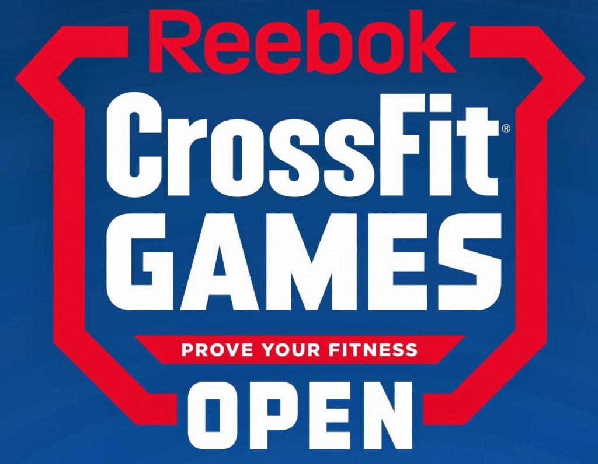

Crossfit Competitions
There are likely opportunites for competing on the local level in Crossfit in your nearest urban area, but the most elite Crossfit competitors will be gunning for the path the Crossfit Games. In order to qualify for the Crossfit games, you must place in the top 5 of one of the regionl competions that take place across the US and across the world. In order to qualify for your specific regionl competition, you must score in the top of your region in the Crossfit Open. Anyone can compete in the Crossfit Open in many different divisions based on age and whether or not you need to scale down any of the movements in the workouts supplied.

 Non-Denominational Strength
Non-Denominational Strength